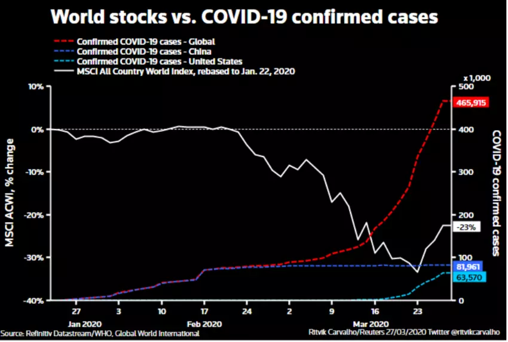
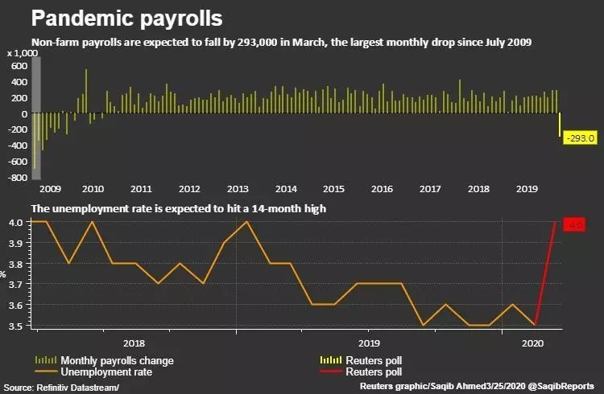
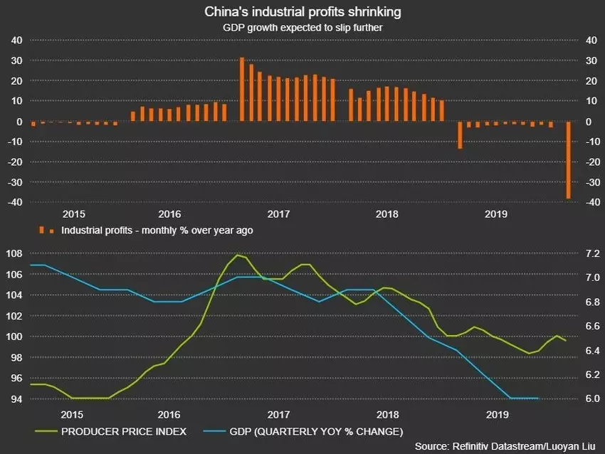

Few will regret the end of the first 2020 quarter. Fears of a U.S.-Iran war gave way to the coronavirus pandemic which JPMorgan reckons will have pushed the world economy into a 12% contraction over January to March. The quarter saw the most brutal global equity collapse since the Great Depression, exacerbated by a 60% oil price slump.
April may not bring much relief, with coronavirus still spreading rapidly and keeping large parts of the global economy shuttered. Banks have rushed to slash Q2 forecasts too, so expect more turbulence on financial markets.
The cavalry has arrived though. G20 governments have promised a $5 trillion revival effort, major central banks have slashed rates and restarted asset purchases. Markets have bounced big and may actually end Q1 on a high. What we need now is to see infection rates peaking and that will show whether April falls, or if it’s indeed time for spring.
|  |
| The effects of COVID-19 on world stocks |
Through years of stubbornly low economic growth and inflation, the brightest spot was the U.S. labour market, with unemployment reaching half-century lows. Coronavirus may have ended that boom. With infections surging, cities in lockdown, businesses downing shutters and most travel on ice, staff layoffs are likely to mushroom. That showed up in the number of Americans filing unemployment benefit claims which hit a record of more than 3 million. Economists polled by Reuters had forecast claims would rise to 1 million, though some estimates were as high as 4 million.
|  |
| Pandemic payrolls |
The world’s factory is re-opening, but the market is closed and the shoppers are gone. China’s social isolation policies appear to have contained the coronavirus at home, allowing work and travel to resume. But major economic damage may be yet to come. With infections climbing exponentially in the United States, Europe and the other markets China exports to, and with supply chains in disarray, China is getting neither the imported components it needs nor demand for its products. Already Chinese factories’ Jan-Feb profits have hit their lowest in a decade and upcoming manufacturing surveys will very likely reveal more pain. And just like everywhere else, job losses are mounting up, regardless of how many cheap loans are being offered to businesses. Expectations are now for the economy to contract this quarter but many economists reckon 2020 growth will be around 2% - a third of the “around 6%” authorities target.
|  |
| China's industrial profits are falling |